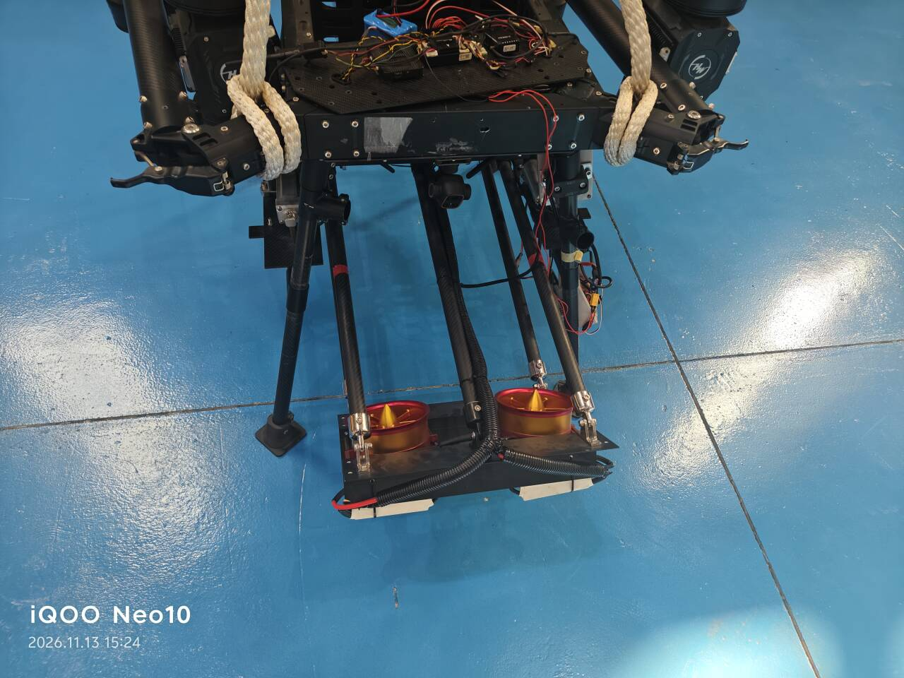

协议通了之后，问题从"能不能控"变成"谁说了算"。 两个输入源：遥控器（人，随时可能介入）和板子（程序，按自己的节奏）。 它们都想改同一个执行器的输出，而这个输出只能有一个值。
这一篇记录的不是我怎么设计出来的，是我怎么被推翻三次的。 三次都推翻在同一个点上：我对"人松手之后应该发生什么"的理解，一直在拿小机器的直觉套大机器。
一、第一版：HOLD，保持最后的值
最初的写法很自然，几乎所有教程都这么干：遥控器一动，接管；摇杆回中，保持刚才的值。
if rc_pwm is not None and abs(rc_pwm - 1500) > 30:
hold_value = rc_pwm # 摇杆一动，记下来
mode = "RC"
elif mode == "RC":
mode = "HOLD" # 回中，但不放弃这个值
这个逻辑在摇杆上是拨杆开关的设备上没问题。 但这台风扇接的是一个弹簧回中的摇杆——手一松，它自己弹回中间。
于是"回中即保持"变成了一件很怪的事：你想让风扇加速，就得一直推着摇杆不放。 松手它就锁在那个位置上不动了，既不停、也不回程序控制， 只能靠再推一下摇杆把它改掉。
二、第二版：给三种语义都留个开关
第一次被推翻之后，我的反应是"那就做成可配的"：
加了 --hold-mode latch | follow | off 三个选项，
锁存、跟随、完全不管，让使用者自己挑。
这个方案活了不到一轮测试就被否了，理由很直接： 一个设备不该让人在"它到底怎么工作"这件事上做选择题。 三种模式意味着三套行为、三套测试、三份文档， 而且现场没有人会在起飞前先确认当前是哪个模式—— 可配置性在这里不是灵活性，是把设计责任推给了使用者。
三、第三版：松手就停，不回旧值
最后定下来的语义只有一句：
摇杆一动，遥控器接管；摇杆一回中，输出立刻回到最低位（停转）， 既不留住刚才的值，也不回到板子之前设的值。此后只有板子再发指令，才重新接管。
翻译成状态机就是三个态，没有第四种可能：
这个状态机有一个反直觉的性质：遥控器优先级最高，但它什么都不"继承"。 它不是一个会接管并保持的控制器，它是一个只有手按着才有效的开关。
| 你做的动作 | 旧版（HOLD） | 现在 |
|---|---|---|
| 推摇杆到 70%，然后松手 | 维持 70%，一直转 | 立刻停 |
| 推摇杆到 70%，停 3 秒，松手 | 维持 70% | 立刻停 |
| 推摇杆到 70%，松手，再推 50% | 变成 50% | 50%，松手即停 |
| 松手之后板子想控 | 控不了，要等遥控器再动 | 立刻可以控 |
第一行和第二行是同一个结果——这正是它比 HOLD 好的地方： 怎么推的不重要，松手就是停。行为可重复了。
四、伸缩杆上，同一件事换了个样子
风扇那一套落到杆上，只改了一个字，就出了一个很隐蔽的 bug。
杆没有"回中即停"的问题——它本来就有中位这个档。 但它是保持型的：拨到低档，杆就一直往下走，直到你拨回来。 所以"遥控器优先"不能只做"接管"，还要做"作废"。
第一版的写法是：遥控器离中 → 用遥控器的值；遥控器回中 → 用板子的值。 逻辑上没毛病，实际表现是：
板子敲了 rd（向下） → 杆往下走 遥控器往上拨夺权 → 杆改向上走 ✓ 这部分是对的 遥控器松手回中 → 杆又开始往下走 ✗ 它去执行板子那条旧指令了
现场的感受非常明确："我夺了权，松手它又自己跑回去了。"
根因是那个 rod_auto 变量一直存着 2000。
遥控器的介入只是临时覆盖了输出，没有消掉这条指令；
覆盖一撤，旧指令原封不动地又生效了。
改法是在遥控器离中的那一刻，就把这个变量清零：
elif rod_pwm < rod_center - rod_midband:
rod_state, rod_want = "LOW", rod_mn
rod_auto = rod_trim # ← 夺权即作废，回中后读到的就是"停"
elif rod_pwm > rod_center + rod_midband:
rod_state, rod_want = "HIGH", rod_mx
rod_auto = rod_trim
五、超时保护：从"防跑飞"变成"防堵转"
还有一个必须有的东西：同方向连续运行超时，强制回中。
起初我把它理解成"防跑飞"——万一程序算错了，别让它一直往一个方向走。 但现场量完行程之后，它的作用变了。

这就是关键："不会越界"和"不会烧"是两件事。 物理限位解决了前者，后者只能靠"到时间就断电"。 堵转的电机不转，但电流照走，热量全堆在绕组里。几分钟就能闻到味道。
所以超时值不能拍脑袋，得有实测依据：
| 参数 | 怎么定 | 定错的后果 |
|---|---|---|
--rod-timeout |
全行程秒数 + 3 | 设短了：杆走一半被截停，功能直接不可用 |
| 设长了：在限位上多堵几秒，白发热 |
实测下来，把超时设成 15 秒、拨着高档不松手，第 15 秒准时打印：
[保护] 伸缩杆同方向已运行 15s，强制回中位 1500us；CH6 回中位后才恢复控制 [AUTO] ... 27.0s | CH6=1950us -> 伸缩杆 1500us [高档] 🔒超时保护中
注意这一行里 CH6=1950us 和 伸缩杆 1500us 同时存在——
输入仍然读得到，但输出被压回中位。这就是"保护优先级高于摇杆"的证据。
而且此时继续拨杆无效，必须先回中位才能解锁，否则就成了"按住不放就能无限顶住"。
六、限速：一个必须同时管住两条通道的数
风扇那一路有个额外的约束：不许超过 1400us。 这既是保护风机本身（长时间满转的电流和温升），也是保护供电。
第一版我把限速写在了"自治输出"这一支上，结果遥控器接管的时候可以轻松推过 1400—— 限速形同虚设，因为它只管了一条路。
改法是把截断放在最终下发之前，不管这个值从哪来：
actual = final_target
if cap > 0:
actual = min(actual, cap) # 遥控器、键盘、自动，一律截断
norm = (actual - mn) / (mx - mn) * 2.0 - 1.0
于是有了这张对照表（--cap 1400，AUX3 范围 1000–1600）：
| 板子设定 | 不加限速时的脉宽 | 限速 1400 后实际 |
|---|---|---|
| 0% | 1000us | 1000us |
| 20% | 1120us | 1120us |
| 40% | 1240us | 1240us |
| 60% | 1360us | 1360us |
| 66.7% | 1400us | 1400us（临界点） |
| 80% | 1480us | 1400us |
| 100% | 1600us | 1400us |
换算关系很简单：实际 = 1000 + 设定百分比 × 6，超过 66.7% 全部撞上 1400。 同一件事在遥控器侧的表现是：摇杆最后三分之一是空程—— 推过去输出不再变化，因为已经封顶了。
⛔已达限速，
让人知道不是信号没到，是到了被截断了。
同一个现象（没反应）对应两种完全不同的原因，界面上必须区分开。
七、方向：我在这里犯了最蠢的一次错
实测下来，杆的驱动器是这么对应的：
1000us = 向上 1500us = 停 2000us = 向下
而代码里一开始假设的是反的（2000 向上）。第一次上机，敲 ru 杆往下走。
这时候正确的做法是只改键盘这一侧的映射。
但我当时想的是"既然方向反了，就加一个全局镜像开关 --rod-invert，
键盘和遥控器一起翻，一劳永逸"。结果是：
| 输入源 | 真实情况 | 加了全局镜像之后 |
|---|---|---|
键盘 ru | 原来给 2000 → 杆向下（错的） | 改成 1000 → 向上 ✓ |
| 遥控器 CH6 低档 | 给 1000 → 杆向上（本来就是对的） | 翻成 2000 → 向下 ✗ 反而改坏了 |
错在我把"两个输入源"当成了一个东西。它们的方向本来就是相反的。 遥控器是往上拨给低值，键盘是往上按给高值，两者在代码里汇到同一个变量之前， 符号已经不一样了。用一把剪刀同时剪两边，必然剪坏一边。
最后的做法：删掉 --rod-invert，只在键盘分支里对调 u 和 d。
遥控器那一路一个字都没动。改完的对照表是这样：
| 操作 | 下发 | 杆的动作 |
|---|---|---|
| 遥控器往上拨（1050，低档） | 1000us | 向上 |
| 遥控器居中（1500） | 1500us | 停 |
| 遥控器往下拨（1950，高档） | 2000us | 向下 |
键盘 ru | 1000us | 向上 |
键盘 rm | 1500us | 停 |
键盘 rd | 2000us | 向下 |
八、这一层的四条规矩
- 松杆即停，不回旧值。 遥控器只有手按着才有效，别让它持有任何状态。
- 夺权要连指令一起作废。 只覆盖输出不清指令，松手就会自己恢复动作。
- 超时是防堵转，不是防跑飞。 物理限位挡位置，挡不住电流。
- 限速要截在最后一步。 只管一条支路的限速等于没有限速。
到这里，功能是完整的了：两路能控、优先级清楚、松手会停、超时会断。 但它还是一个"必须在终端里手动敲起来"的脚本——关掉终端、拔掉键盘、断开 SSH，它就没了。 最后一篇写怎么让它变成设备的一部分。